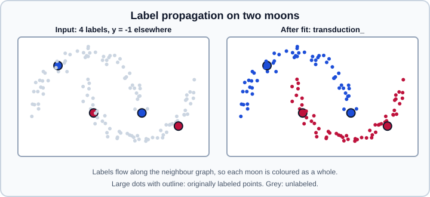

Semi-Supervised Learning
|
This content was generated with the assistance of AI and should be verified against the official documentation before being relied on in production. |
Semi-supervised learning uses a small set of labeled samples together with many unlabeled ones. The module sklearn.semi_supervised offers three classifiers: SelfTrainingClassifier, which wraps any supervised classifier that can output probabilities, and LabelPropagation and LabelSpreading, which spread labels over a similarity graph. All three are classifiers; there is no semi-supervised regressor in the module. For the place of this setting among supervised, unsupervised and other kinds of learning, see Types of Learning.
Examples were run on Python 3.13 with scikit-learn 1.9.1 on 2026-10-31. No snippet needs PyTorch or TensorFlow.
The unlabeled convention
Every estimator in the module expects unlabeled samples to be marked in y with the integer -1. The feature matrix X contains labeled and unlabeled rows together. If the real labels are strings, create y with dtype=object so that the array can hold both the strings and -1; a plain NumPy string array would turn -1 into the text "-1". Note that -1 therefore cannot be a genuine class label.
Because the estimators receive the labeled and the unlabeled rows in fit, this is called transductive learning: after fit, the attribute transduction_ holds the label assigned to every training sample (including those that started unlabeled), while predict handles new, unseen samples.
When it helps
Unlabeled data carries information only when the data distribution relates to the labels. The user guide stresses that the methods improve performance only when their assumptions hold. The usual ones are:
-
the smoothness assumption: nearby points have the same label;
-
the cluster assumption: points in the same cluster share a label, so the decision boundary should lie in low-density regions;
-
the manifold assumption: the data lie on a lower-dimensional structure on which labels vary smoothly.
If the unlabeled points do not follow these assumptions, adding them can lower accuracy. Always compare with a purely supervised baseline trained on the labeled samples only, and evaluate on held-out data with known labels. Typical situations are expensive labeling (medical images, annotation by experts), or an abundance of raw records with a few curated ones. The topic is related to the weak-supervision and representation-learning ideas in Embeddings & Representation Learning and the choice of problem framing in Problem Framing & ML Projects.

SelfTrainingClassifier
Self-training (the Yarowsky algorithm) repeatedly fits a supervised classifier on the labeled data, predicts the unlabeled samples, moves the confident predictions (pseudo-labels) into the labeled set, and refits. It stops when no sample is added, when every sample is labeled, or when max_iter rounds are done.
| Parameter | Default | Meaning |
|---|---|---|
|
|
Any classifier that implements |
|
|
With |
|
|
|
|
|
Number of samples added per round when |
|
|
Maximum number of rounds, or |
|
|
Print progress. |
The fitted attributes are estimator_, classes_, transduction_ (the labels used for the final fit, including pseudo-labels), labeled_iter_ (the round in which each sample was labeled: 0 for the original labels, -1 for samples that never received a label), n_iter_ and termination_condition_ (one of "max_iter", "no_change" and "all_labeled").
The first example keeps 15 labels out of 398 training samples and compares a supervised baseline with self-training.
import numpy as np
from sklearn.datasets import load_breast_cancer
from sklearn.linear_model import LogisticRegression
from sklearn.model_selection import train_test_split
from sklearn.pipeline import make_pipeline
from sklearn.preprocessing import StandardScaler
from sklearn.semi_supervised import SelfTrainingClassifier
X, y = load_breast_cancer(return_X_y=True)
X_train, X_test, y_train, y_test = train_test_split(X, y, test_size=0.3, stratify=y, random_state=0)
# Keep 15 labels, mark every other training label as unlabeled with -1
rng = np.random.RandomState(0)
labeled = rng.choice(len(y_train), size=15, replace=False)
y_semi = np.full_like(y_train, -1)
y_semi[labeled] = y_train[labeled]
base = make_pipeline(StandardScaler(), LogisticRegression(max_iter=1000))
supervised = base.fit(X_train[labeled], y_train[labeled])
print("supervised, 15 labels:", round(supervised.score(X_test, y_test), 3))
self_training = SelfTrainingClassifier(base, threshold=0.9, max_iter=20)
self_training.fit(X_train, y_semi)
print("self-training:", round(self_training.score(X_test, y_test), 3))
print("rounds:", self_training.n_iter_, "stopped because:", self_training.termination_condition_)
print("pseudo-labelled per round:", np.bincount(self_training.labeled_iter_[self_training.labeled_iter_ >= 0]))
print("never labeled:", int((self_training.labeled_iter_ == -1).sum()))
pseudo = (y_semi == -1) & (self_training.labeled_iter_ >= 1)
print("pseudo-label accuracy:", round((self_training.transduction_[pseudo] == y_train[pseudo]).mean(), 3))This printed 0.936 for the supervised baseline and 0.924 for self-training on the held-out test set, so on this dataset self-training did not help (the difference is within the noise of a 171-sample test set). It ran 6 rounds and stopped with "no_change", adding 287, 38, 14, 4 and 1 pseudo-labels in successive rounds after the 15 original labels, left 39 samples never labeled, and the pseudo-labels it added were 96.8 percent correct. The honest lesson is the one in the user guide: semi-supervised learning is not guaranteed to win.
Pitfalls specific to self-training:
-
Confirmation bias. The classifier trains on its own predictions, so early mistakes are reinforced. A high
threshold(0.9 and above) or a smallk_bestadds fewer but cleaner pseudo-labels. -
Calibration. The threshold is applied to
predict_proba, so the base classifier should have meaningful probabilities. Models such as random forests and naive Bayes are often poorly calibrated, and anSVChas nopredict_probaof its own; check with Probability Calibration. Probabilities from a model that is too confident add errors quickly. -
Class imbalance. A classifier tends to be confident about the majority class, so the pseudo-labels may drift towards it; see Imbalanced Data.
-
The estimator must support
predict_proba. For anSVC, wrap it asCalibratedClassifierCV(SVC(), ensemble=False), which adds an internal cross-validation to the fit, or useLogisticRegressioninstead.SVC(probability=True)was deprecated in scikit-learn 1.9 and will be removed in 1.11 (see Support Vector Machines). -
Unsupervised preprocessing and the base estimator are best wrapped in a pipeline, so that the whole chain is cloned by
SelfTrainingClassifier, see Pipelines. -
With metadata routing enabled through
sklearn.set_config(enable_metadata_routing=True), extrafitandpredictparameters are routed to the wrapped estimator (added in 1.6; see Metadata Routing).
The second example uses string labels, a random forest and the "k_best" criterion.
import numpy as np
from sklearn.datasets import load_breast_cancer
from sklearn.ensemble import RandomForestClassifier
from sklearn.model_selection import train_test_split
from sklearn.semi_supervised import SelfTrainingClassifier
X, y = load_breast_cancer(return_X_y=True)
names = np.array(["malignant", "benign"], dtype=object)
y_text = names[y] # string labels need dtype=object to hold -1 too
X_train, X_test, y_train, y_test = train_test_split(X, y_text, test_size=0.3, stratify=y_text, random_state=0)
rng = np.random.RandomState(0)
y_semi = y_train.copy()
y_semi[rng.rand(len(y_semi)) > 0.1] = -1 # keep roughly 10 percent of the labels
print("labeled:", int((y_semi != -1).sum()), "of", len(y_semi))
model = SelfTrainingClassifier(
RandomForestClassifier(n_estimators=100, random_state=0), criterion="k_best", k_best=20, max_iter=5
).fit(X_train, y_semi)
print("accuracy on held-out labeled data:", round(model.score(X_test, y_test), 3))
print("rounds:", model.n_iter_, "stopped because:", model.termination_condition_)
print(model.classes_, model.transduction_[:3])About 10 percent of the training labels (40 of 398) were kept, and the model reached 0.912 on the held-out data after 5 rounds, terminated by "max_iter". The transduction_ array still holds -1 for any sample that was never pseudo-labeled, and classes_ lists the string classes (without -1). The number is a smoke test; it is not evidence that self-training beats the supervised baseline.
LabelPropagation and LabelSpreading
These graph-based methods build a similarity graph over all samples (labeled and unlabeled), then iterate: each node takes on a weighted mixture of the label distributions of its neighbours. At convergence every sample has a label distribution, stored in label_distributions_ (shape n_samples by n_classes), and transduction_ is its argmax.
The graph is defined by the kernel argument:
-
"rbf"gives \(\exp(-\gamma \lVert x - x' \rVert^2)\), controlled bygamma(default 20). It produces a dense, fully connected graph: an \(n \times n\) matrix, so memory and time per iteration grow quadratically and can become prohibitive. -
"knn"connects each point to itsn_neighborsnearest neighbours (default 7). The graph is sparse and much lighter in memory and time. -
A callable kernel is also accepted, which returns a sparse or dense affinity from two arrays.
The difference between the two classes is how strongly the original labels are respected:
-
LabelPropagationuses the raw similarity matrix and hard clamping: the labeled points keep their labels exactly (the clamping factor is 0). -
LabelSpreadinguses a normalised graph Laplacian and a clamping factoralpha(default 0.2) that lets the algorithm change a share of the original label distribution; with the default, 80 percent of the initial label information is kept. It tolerates noisy labels better.
Other parameters are max_iter (1000 for LabelPropagation and 30 for LabelSpreading by default; raise it for larger or less connected graphs), tol (the convergence threshold) and n_jobs. The fitted attributes include X_, classes_, label_distributions_, transduction_ and n_iter_. These models can classify new points with predict and predict_proba through the graph kernel.
import numpy as np
from sklearn.datasets import make_moons
from sklearn.metrics import accuracy_score
from sklearn.semi_supervised import LabelPropagation, LabelSpreading
X, y_true = make_moons(n_samples=300, noise=0.08, random_state=0)
rng = np.random.RandomState(0)
y = np.full_like(y_true, -1)
for c in (0, 1):
y[rng.choice(np.where(y_true == c)[0], size=3, replace=False)] = c
for name, model in [
("LabelPropagation knn", LabelPropagation(kernel="knn", n_neighbors=7, max_iter=1000)),
("LabelPropagation rbf", LabelPropagation(kernel="rbf", gamma=20, max_iter=1000)),
("LabelSpreading knn", LabelSpreading(kernel="knn", n_neighbors=7, alpha=0.2, max_iter=1000)),
("LabelSpreading rbf", LabelSpreading(kernel="rbf", gamma=20, alpha=0.2, max_iter=1000)),
]:
model.fit(X, y)
print(f"{name:22s} accuracy on all points: {accuracy_score(y_true, model.transduction_):.3f} iterations: {model.n_iter_}")
proba = model.label_distributions_
print(proba.shape, proba[:2].round(3))
print(model.predict([[0.5, 0.25]]), model.predict_proba([[0.5, 0.25]]).round(3))With three labels per class out of 300 points, LabelPropagation labeled 99.7 percent of all points correctly with both kernels (17 iterations with "knn" and 363 with "rbf"), LabelSpreading reached 98.3 percent with "rbf" but only 81.0 percent with "knn" and the default alpha, and the new point predicted near the boundary received nearly even probabilities. A different seed or neighbour count changes these figures; the accuracy of graph methods is sensitive to the graph, so tune n_neighbors, gamma and alpha on labeled validation data.
Choosing between the graph methods and self-training:
| Aspect | Self-training | Label propagation and spreading |
|---|---|---|
Model |
Any probabilistic classifier, with its own capacity |
A similarity graph and a kernel, no separate model |
Strength |
Reuses a strong supervised model, scales with it |
Follows cluster or manifold structure, handles very few labels |
Weakness |
Confirmation bias, needs good probabilities |
Needs a meaningful distance; dense graphs do not scale; sensitive to |
Cost |
Several refits of the base model |
Graph construction plus iterations; use |
Evaluating a semi-supervised model
-
Never score against the
-1labels.scoreand the metrics need true labels, so hold out a test set of fully labeled samples before hiding any labels, as in the examples above. -
Cross-validation: split first, then hide labels in the training part inside each fold. Put the label masking in the same procedure used to estimate the baseline so that both models see the same labeled subset; see Cross-Validation and Train-Test Split.
-
Report the supervised baseline trained on the labeled samples only, and, if available, an upper bound trained with all labels.
-
Vary the number of labeled samples; the benefit of unlabeled data is largest when labels are very scarce.
-
The statistics of the unlabeled pool should match the data seen in production; otherwise pseudo-labels can encode a bias.
Alternatives
For clustering-based methods see Clustering; a common practical alternative is to learn an unsupervised representation (PCA, an autoencoder, an embedding model) and train a supervised classifier on a few labels (see Decomposition and Transfer Learning & Foundation Models). Methods that scale to large neural networks, such as consistency regularisation and modern pseudo-labelling, are outside scikit-learn; see Neural Network Fundamentals and Using scikit-learn with PyTorch & Keras.